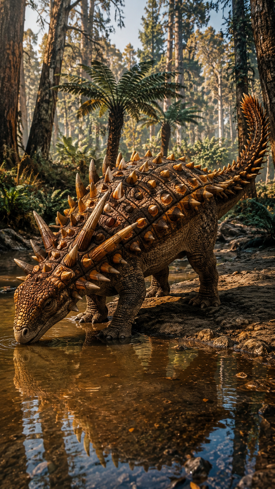
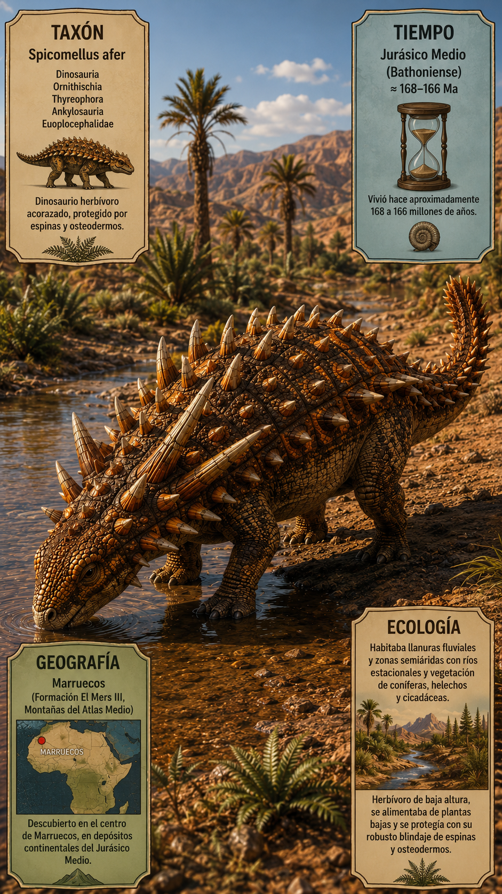
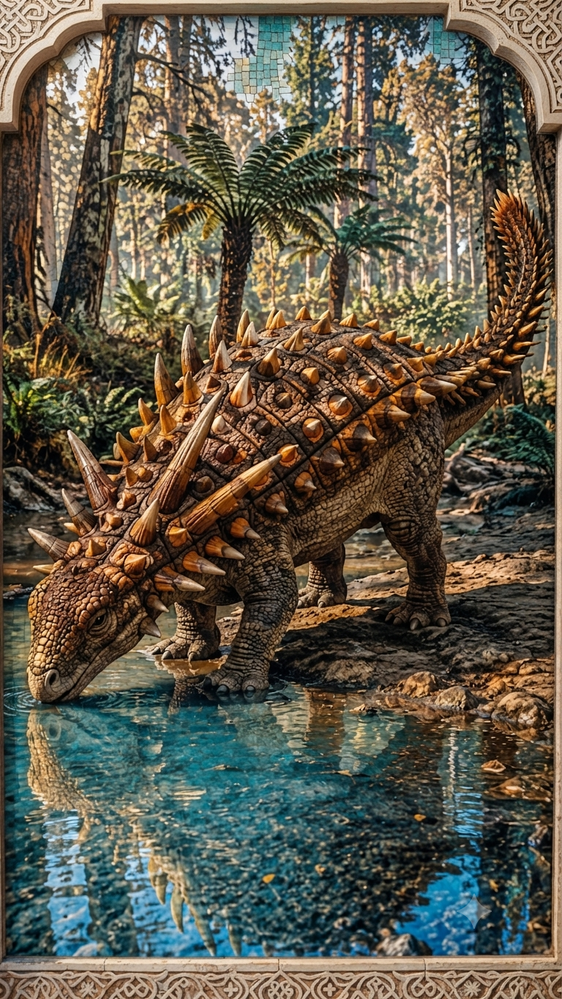
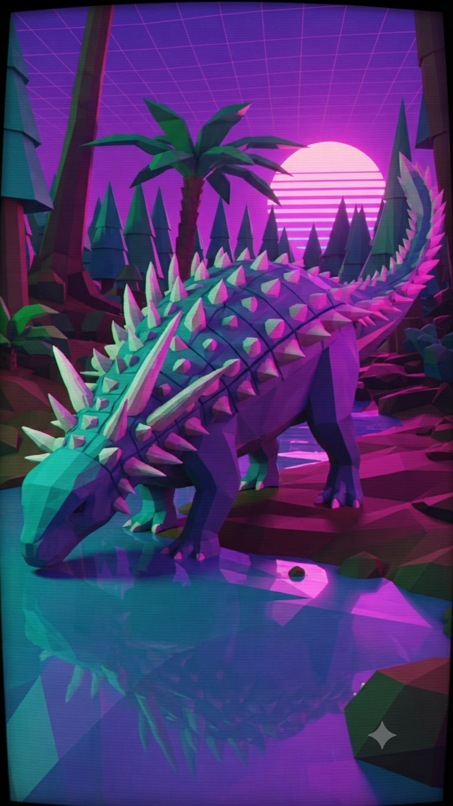

Paleoficha de PalEntropía

▶ Haz clic sobre la imagen para ver el Short oficial en YouTube.



TAXÓN: Spicomellus afer
CLADO: Dinosauria (Ornithischia, Ankylosauria)
DIETA: Herbívoro. Se alimentaba de vegetación baja, helechos, cicadas y coníferas utilizando un pico córneo adaptado para ramonear.
TAMAÑO: Longitud estimada en torno a los 2-3 metros, caracterizado por una complexión robusta y baja típica de los anquilosaurios basales.
LOCOMOCIÓN: Cuadrúpedo lento y pesado, con extremidades robustas adaptadas para soportar una fuerte coraza defensiva.
TIEMPO: Jurásico Medio (Bathoniense / Calloviense, aprox. 168 millones de años).
GEOGRAFÍA: Norte de África (Formación El Mers, Atlas Medio, Marruecos).
EQUIVALENCIA PALEOGEOGRÁFICA: Regiones áridas a semiáridas surcadas por sistemas fluviales estacionales en el margen norte del supercontinente Gondwana.
AMBIENTE PALEOECOLÓGICO: Llanuras aluviales y entornos fluviales con vegetación ribereña rodeados de paisajes más secos en el Jurásico Medio africano.
ECOLOGÍA:
- Fauna secundaria: Dinosaurios saurópodos, ornitópodos basales, reptiles marinos y terrestres contemporáneos.
- Nicho ecológico: Herbívoro de baja altura protegido por una armadura dérmica única en el registro fósil.
- Relaciones: Representa el anquilosaurio más antiguo conocido de África y destaca por poseer espinas dérmicas inusualmente fusionadas de manera directa a las costillas, un rasgo anatómico sin paralelo en el reino animal.
CLIMA: Cálido y semiárido, con marcada estacionalidad de precipitaciones.
ESTADO ECOLÓGICO: Extinto. Su descubrimiento revolucionó el conocimiento sobre la evolución temprana y la distribución geográfica de los anquilosaurios acorazados.